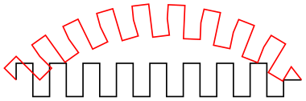
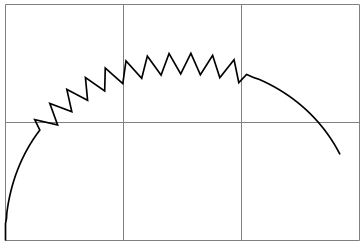
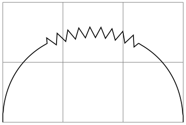
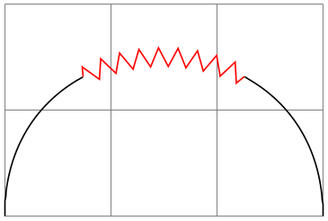
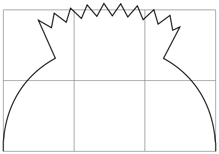

The TikZ and PGF Packages
Manual for version 3.1.9a
The Basic Layer
102 Decorations
\usepgfmodule{decorations} % LaTeX and plain TeX and pure pgf
\usepgfmodule[decorations] % ConTeXt and pure pgf
The commands for creating decorations are defined in this module, so you need to load this module to use decorations. This module is automatically loaded by the different decoration libraries.
102.1 Overview¶
Decorations are a general way of creating graphics by “moving along” a path and, while doing so, either drawing something or constructing a new path. This could be as simple as extending a path with a “zigzagged” line…
\usetikzlibrary {decorations,decorations.pathmorphing}
\tikz \draw decorate[decoration=zigzag] {(0,0) --
(3,0)};
…but could also be as complex as typesetting text along a path:
The workflow for using decorations is the following:
-
1. You define a decoration using the \pgfdeclaredecoration command. Different useful decorations are already declared in libraries like decorations.shapes.
-
2. You use normal path construction commands like \pgfpathlineto to construct a path. Let us call this path the to-be-decorated path.
-
3. You place the path construction commands inside the environment {pgfdecoration}. This environment takes the name of a previously declared decoration as a parameter. It will then start “walking along” the to-be-decorated path. As it does this, a special finite automaton called a decoration automaton produces new path commands as its output (or even other outputs). These outputs replace the to-be-decorated path; indeed, after the to-be-decorated path has been fully walked along it is thrown away, only the output of the automaton persists.
In the present section the process of how decoration automata work is explained first. Then the command(s) for declaring decoration automata and for using them are covered.
102.2 Decoration Automata¶
Decoration automata (and the closely related meta-decoration automata) are a general concept for creating graphics “along paths”. For straight lines, this idea was first proposed by Till Tantau in an earlier version of pgf, the idea to extend this to arbitrary path was proposed and implemented by Mark Wibrow. Further versatility is provided by “meta-decorations”. These are automata that decorate a path with decorations.
In the present subsection the different ideas underlying decoration automata are presented.
102.2.1 The Different Paths¶
In order to prevent confusion with different types of paths, such as those that are extended, those that are decorated and those that are created, the following conventions will be used:
-
• The preexisting path refers to the current path in existence before a decoration environment. (Possibly this path has been created by another decoration used earlier, but we will still call this path the preexisting path also in this case.)
-
• The input path refers to the to-be-decorated path that the decoration automaton moves along. The input path may consist of many line and curve input segments (for example, a circle or an ellipse consists of four curves). It is specified inside the decoration environment.
-
• The output path refers to the path that the decoration creates. Depending on the decoration, this path may or may not be empty (a decoration can also choose to use side-effects instead of producing an output path). The input path is always consumed by the decoration automaton, that is, it is no longer available in any way after the decoration automaton has finished.
The effect of a decoration environment is the following: The input path, which is specified inside the environment, is constructed and stored. This process does not alter the preexisting path in any way. Then the decoration automaton is started (as described later) and it produces an output path (possibly empty). Whenever part of the output path is produced, it is concatenated with the preexisting path. After the environment, the current path will equal the original preexisting path followed by the output path.
It is permissible that a decoration issues a \pgfusepath command. As usual, this causes the current path to be filled or stroked or some other action to be taken and the current path is set to the empty path. As described above, when the decoration automaton starts, the current path is the preexisting path and as the automaton progresses, the current path is constantly being extended by the output path. This means that first time a \pgfusepath command is used on a decoration, the preexisting path is part of the path this command operates on; in subsequent calls only the part of the output path constructed since the last \pgfusepath command will be used.
You can use this mechanism to stroke or fill different parts of the output path in different colors, line widths, fills and shades; all within the same decoration. Alternatively, a decoration can choose to produce no output path at all: the text decoration simply typesets text along a path.
102.2.2 Segments and States¶
The most common use of a decoration is to “repeat something along a path” (for example, the zigzag decoration repeats along a path). However, it not necessarily the case that only one thing is repeated: a decoration can consist of different parts, or segments, repeated in a particular order.
When you declare a decoration, you provide a description of how their different segments will be rendered. The description of each segment should be given in a way as if the “\(x\)-axis” of the segment is the tangent to the path at a particular point, and that point is the origin of the segment. Thus, for example, the segment of the zigzag decoration might be defined using the following code:
\pgfpathlineto{\pgfpoint{5pt}{5pt}}
\pgfpathlineto{\pgfpoint{15pt}{-5pt}}
\pgfpathlineto{\pgfpoint{20pt}{0pt}}
pgf will ensure that an appropriate coordinate transformation is in place when the segment is rendered such that the segment actually points in the right direction. Also, subsequent segments will be transformed such that they are “further along the path” toward the end of the path. All transformations are set up automatically.
Note that we did not use a \pgfpathmoveto{\pgfpointorigin} at the beginning of the segment code. Doing so would subdivide the path into numerous subpaths. Rather, we assume that the previous segment caused the current point to be at the origin.
The width of a segment can (and must) be specified explicitly. pgf will use this width to find out the start point of the next segment and the correct rotation. The width the you provide need not be the “real” width of the segment, which allows decoration segments to overlap or to be spaced far apart.
The zigzag decoration only has one segment that is repeated again and again. However, we might also like to have different segments and use rules to describe which segment should be used where. For example, we might have special segments at the start and at the end.
Decorations use a mechanism known in theoretical in computer science as finite state automata to describe which segment is used at a particular point. The idea is the following: For the first segment we start in a special state called the initial state. In this state, and also in all other states later, pgf first computes how much space is left on the input path. That is, pgf keeps track of the distance to the end of the input path. Attached to each state there is a set of rules of the following form: “If the remaining distance on the input path is less than \(x\), switch to state \(q\).” pgf checks for each of these rules whether it applies and, if so, immediately switches to state \(q\).
Only if none of the rules tell us to switch to another state, pgf will execute the state’s code. This code will (typically) add a segment to the output path. In addition to the rules there is also a width parameter attached to each state. pgf then translates the coordinate system by this width and reduces the remaining distance on the input path. Then, pgf either stays in the current state or switches to another state, depending on yet another property attached of the state.
The whole process stops when a special state called final is reached. The segment of this state is immediately added to the output path (it is often empty, though) and the process ends.
102.3 Declaring Decorations¶
The following command is used to declare a decoration. Essentially, this command describes the decoration automaton.
\pgfdeclaredecoration{⟨name⟩}{⟨initial state⟩}{⟨states⟩} ¶
This command declares a new decoration called ⟨name⟩. The ⟨states⟩ argument contains a description of the decoration automaton’s states and the transitions between them. The ⟨initial state⟩ is the state in which the automaton starts.
When the automaton is later applied to an input path, it keeps track of a certain position on the input path. This current point will “travel along the path”, each time being moved along by a certain distance. This will also work if the path is not a straight line. That is, it is permissible that the path curves are veers at a sharp angle. It is also permissible that while traveling along the input path, the current input segment ends and a new input segment starts. In this case, the remaining distance on the first input segment is subtracted from the ⟨dimension⟩ and then we travel along the second input segment for the remaining distance. This input segment may also end early, in which case we travel along the next input segment, and so on. Note that it cannot happen that we travel past the end of the input path since this would have caused an immediate switch to the final state.
Note that the computation of the path lengths has only a low accuracy because of TeX’s small math capabilities. Do not expect high accuracy alignments when using decorations (unless the input path consists only of horizontal and vertical lines).
The ⟨states⟩ argument should consist of \state commands, one for each state of the decoration automaton. The \state command is defined only when the ⟨states⟩ argument is executed.
\state{⟨name⟩}[⟨options⟩]{⟨code⟩} ¶
This command declares a new state inside the current decoration automaton. The state is named ⟨name⟩.
When the decoration automaton is in state ⟨name⟩, the following things happen:
1. The ⟨options⟩ are parsed. This may lead to a state switch, see below. When this happens, the following steps are not executed. The ⟨options⟩ are executed one after the other in the given order. If an option causes a state switch, the switch is immediate, even if later options might cause a different state switch.
2. The ⟨code⟩ is executed in a TeX-group with the current transformation matrix set up in such a way that the origin is on the input path at the current point (the point at the distance traveled up to now) and the coordinate system is rotated in such a way that the positive \(x\)-axis points in the direction of the tangent to the input path at the current point, while the positive \(y\)-axis points to the left of this tangent.
As described earlier, the ⟨code⟩ can have two different effects: If it just contains path construction commands, the decoration will produce an output path, that is, it extends the preexisting path. Here is an example:

\usetikzlibrary {decorations}
\pgfdeclaredecoration{example}{initial}
{
\state{initial}[width=10pt]
{
\pgfpathlineto{\pgfpoint{0pt}{5pt}}
\pgfpathlineto{\pgfpoint{5pt}{5pt}}
\pgfpathlineto{\pgfpoint{5pt}{-5pt}}
\pgfpathlineto{\pgfpoint{10pt}{-5pt}}
\pgfpathlineto{\pgfpoint{10pt}{0pt}}
}
\state{final}
{
\pgfpathlineto{\pgfpointdecoratedpathlast}
}
}
\tikz[decoration=example]
{
\draw [decorate] (0,0) --
(3,0);
\draw [red,decorate] (0,0) to
[out=45,in=135] (3,0);
}
Alternatively, the ⟨code⟩ can also contain the \pgfusepath command. This will use the path in the usual manner, where “the path” is the preexisting path plus a part of the output path for the first invocation and the different parts of the rest of the output path for the following invocation. Here is an example:
\usetikzlibrary {decorations,shapes.geometric}
\pgfdeclaredecoration{stars}{initial}{
\state{initial}[width=15pt]
{
\pgfmathparse{round(rnd*100)}
\pgfsetfillcolor{yellow!\pgfmathresult!orange}
\pgfsetstrokecolor{yellow!\pgfmathresult!red}
\pgfnode{star}{center}{}{}{\pgfusepath{stroke,fill}}
}
\state{final}
{
\pgfpathmoveto{\pgfpointdecoratedpathlast}
}
}
\tikz\path[decorate, decoration=stars, star point ratio=2, star points=5,
inner sep=0, minimum size=rnd*10pt+2pt]
(0,0) .. controls
(0,2) and
(3,2) .. (3,0)
.. controls
(3,-3) and
(0,0) .. (0,-3)
.. controls
(0,-5) and
(3,-5) .. (3,-3);
3. After the ⟨code⟩ has been executed (possibly more than once, if the repeat state option is used), the state switches to whatever state has been specified inside the ⟨options⟩ using the next state option. If no next state has been specified, the state stays the same.
The ⟨options⟩ are executed with the key path set to /pgf/decoration automaton. The following keys are defined:
/pgf/decoration automaton/switch if less than=⟨dimension⟩ to ⟨new state⟩(no default) ¶
When this key is encountered, pgf checks whether the remaining distance to the end of the input path is less than ⟨dimension⟩. If so, an immediate state switch to ⟨new state⟩ occurs.
/pgf/decoration automaton/switch if input segment
less than=
⟨dimension⟩ to ⟨new state⟩(no default)
¶
When this key is encountered, pgf checks whether the remaining distance to the end of the current input segment of the input path is less than ⟨dimension⟩. If so, an immediate state switch to ⟨new state⟩ occurs.
/pgf/decoration automaton/width=⟨dimension⟩(no default) ¶
First, this option causes an immediate switch to the state final if the remaining distance on the input path is less than ⟨dimension⟩. The effect is the same as if you had said switch if less than=⟨dimension⟩ to final just before the width option.
If no switch occurs, this option tells pgf the width of the segment. The current point will travel along the input path (as described earlier) by this distance.
/pgf/decoration automaton/repeat state=⟨repetitions⟩ (no default, initially 0) ¶
Tells pgf how long the automaton stays “normally” in the current state. This count is reset to ⟨repetitions⟩ each time one of the switch if keys causes a state switch. If no state switches occur, the ⟨code⟩ is executed and the repetition counter is decreased. Then, there is once more a chance of a state change caused by any of the ⟨options⟩. If no repetition occurs, the ⟨code⟩ is executed once more and the counter is decreased once more. When the counter reaches zero, the ⟨code⟩ is executed once more, but, then, a different state is entered, as specified by the next state option.
Note, that the maximum number of times the state will be executed is \(\meta {repetitions}+1\).
/pgf/decoration automaton/next state=⟨new state⟩(no default) ¶
After the ⟨code⟩ for state has been executed for the last time, a state switch to ⟨new state⟩ is performed. If this option is not given, the next state is the same as the current state.
/pgf/decoration automaton/if input segment is closepath=⟨options⟩(no default) ¶
This key checks whether the current input segment is a closepath operation. If so, the ⟨options⟩ get executed; otherwise nothing happens. You can use this option to handle a closepath in some special way, for instance, switching to a new state in which \pgfpathclose is executed.
/pgf/decoration automaton/auto end on length=⟨dimension⟩(no default) ¶
This key is just included for convenience, it does nothing that cannot be achieved using the previous options. The effect is the following: If the remaining input path’s length is at most ⟨dimension⟩, the decorated path is ended with a straight line to the end of the input path and, possibly, it is closed, namely if the input path ended with a closepath operation. Otherwise, it is checked whether the current input segment is a closepath segment and whether the remaining distance on the current input segment is at most ⟨distance⟩. If so, then a closepath operation is used to close the decorated path and the automaton continues with the next subpath, remaining in the current state.
In all other cases, nothing happens.
/pgf/decoration automaton/auto corner on length=⟨dimension⟩(no default) ¶
This key has the following effect: Firstly, in case the TeX-if \ifpgfdecoratepathhascorners is false, nothing happens. Otherwise, it is tested whether the remaining distance on the current input segment is at most ⟨dimension⟩. If so, a lineto operation is used to reach the end of this input segment and the automaton continues with the next input segment, but remains in the current state.
The main idea behind this option is to avoid having decoration segments “overshoot” past a corner.
You may sometimes wish to do computations outside the transformational TeX-group of the current segment, so that these results of these computations are available in the next state. For this, the following two options are useful:
/pgf/decoration automaton/persistent precomputation=⟨precode⟩(no default) ¶
If the ⟨code⟩ of the state is executed, the ⟨precode⟩ is executed first and it is executed outside the TeX-group of the ⟨code⟩. Note that when the ⟨precode⟩ is executed, the transformation matrix is not set up.
/pgf/decoration automaton/persistent postcomputation=⟨postcode⟩(no default) ¶
Works like the persistent precomputation option, only the ⟨postcode⟩ is executed after (and also outside) the TeX-group of the main ⟨code⟩.
There are a number of macros and dimensions which may be useful inside a decoration automaton. The following macros are available:
\pgfdecoratedpathlength ¶
The length of the input path. If the input path consists of several input segments, this number is the sum of the lengths of the input segments.
\pgfdecoratedinputsegmentlength ¶
The length of the current input segment of the input path. “Current input segment” refers to the input segment on which the current point lies.
\pgfpointdecoratedpathlast ¶
The final point of the input path.
\pgfpointdecoratedinputsegmentlast ¶
The final point of the current input segment of the input path.
\pgfdecoratedangle ¶
The angle of the tangent to the decorated path at the origin of the current segment. The transformation matrix applied at the beginning of a state includes a rotation equivalent to this angle.
The following TeX dimension registers are also available inside the automaton:
\pgfdecoratedremainingdistance ¶
The remaining distance on the input path.
\pgfdecoratedcompleteddistance ¶
The completed distance on the input path.
\pgfdecoratedinputsegmentremainingdistance ¶
The remaining distance on the current input segment of the input path.
\pgfdecoratedinputsegmentcompleteddistance ¶
The completed distance on the current input segment of the input path.
Further keys and macros are defined and used by the decoration libraries, see Section 50.
The following example shows how these options can be used:
\usetikzlibrary {decorations}
\pgfdeclaredecoration{complicated
example
decoration}{initial}
{
\state{initial}[width=5pt,next state=up]
{ \pgfpathlineto{\pgfpoint{5pt}{0pt}} }
\state{up}[width=5pt,next state=down]
{
\ifdim\pgfdecoratedremainingdistance>\pgfdecoratedcompleteddistance
% Growing
\pgfpathlineto{\pgfpoint{0pt}{\pgfdecoratedcompleteddistance}}
\pgfpathlineto{\pgfpoint{5pt}{\pgfdecoratedcompleteddistance}}
\pgfpathlineto{\pgfpoint{5pt}{0pt}}
\else
% Shrinking
\pgfpathlineto{\pgfpoint{0pt}{\pgfdecoratedremainingdistance}}
\pgfpathlineto{\pgfpoint{5pt}{\pgfdecoratedremainingdistance}}
\pgfpathlineto{\pgfpoint{5pt}{0pt}}
\fi%
}
\state{down}[width=5pt,next state=up]
{
\ifdim\pgfdecoratedremainingdistance>\pgfdecoratedcompleteddistance
% Growing
\pgfpathlineto{\pgfpoint{0pt}{-\pgfdecoratedcompleteddistance}}
\pgfpathlineto{\pgfpoint{5pt}{-\pgfdecoratedcompleteddistance}}
\pgfpathlineto{\pgfpoint{5pt}{0pt}}
\else
% Shrinking
\pgfpathlineto{\pgfpoint{0pt}{-\pgfdecoratedremainingdistance}}
\pgfpathlineto{\pgfpoint{5pt}{-\pgfdecoratedremainingdistance}}
\pgfpathlineto{\pgfpoint{5pt}{0pt}}
\fi%
}
\state{final}
{
\pgfpathlineto{\pgfpointdecoratedpathlast}
}
}
\begin{tikzpicture}[decoration=complicated example
decoration]
\draw decorate{ (0,0) --
(3,0)};
\fill [red!50,rounded corners=2pt]
decorate
{(.5,-2) --
++(2.5,-2.5)} --
(3,-5) -|
(0,-2) --
cycle;
\end{tikzpicture}
102.3.1 Predefined Decorations¶
The three decorations moveto, lineto, and curveto are predefined and “always available”. They are mostly useful in conjunction with meta-decorations. They are documented in Section 50 alongside the other decorations.
102.4 Using Decorations¶
Once a decoration has been declared, it can be used.
\begin{pgfdecoration}{⟨decoration list⟩} ¶
⟨environment contents⟩
\end{pgfdecoration}
The ⟨environment contents⟩ should contain commands for creating an path. This path is the basis for the input paths for the decorations in the ⟨decoration list⟩. In detail, the following happens:
1. The preexisting unused path is saved.
2. The path commands specified in ⟨environment contents⟩ are executed and this resulting path is saved. The path is then divided into different input paths as follows: The format for each item in {⟨decoration list⟩} is
{⟨decoration⟩}{⟨length⟩}{⟨before code⟩}{⟨after code⟩}
The ⟨before code⟩ and the ⟨after code⟩ are optional. The input path is divided into input paths as follows: The first input path consists of the first lines of the path specified in the ⟨environment contents⟩ until the ⟨length⟩ of the first element of the ⟨decoration list⟩ is reached. If this length is reached in the middle of a line, the line is broken up at this exact position. Then the second input path has the ⟨length⟩ of the second element in the ⟨decoration list⟩ and consists of the lines making up the following ⟨length⟩ part of the path in the ⟨environment contents⟩, and so on.
If the lengths in the ⟨decoration list⟩ do not add up to the total length of the path in the ⟨environment contents⟩, either some decorations are dropped (if their lengths add up to more than the length of the ⟨environment contents⟩) or the input path is not fully used (if their lengths add up to less).
3. The preexisting path is reinstalled.
4. The decoration automata move along the input paths, thus creating (and possibly using) the output paths. These output paths extend the current path (unless they are used).
Some important points should be noted regarding the use of this environment:
• If ⟨environment contents⟩ does not begin with \pgfpathmoveto, the last known point on the preexisting path is assumed as the starting point.
• All except the last of any sequence of consecutive move-to commands in ⟨environment contents⟩ are discarded.
• Any move-to commands at the end of ⟨environment contents⟩ are ignored.
• Any close-path commands on the input path are interpreted as straight lines. Internally, something a little more complicated is going on, however, a closed path on the input path has no effect on the output path, other than causing the automaton to travel in a straight line towards the location of the last move-to command on the input path.
• Although tangent computations for the input path work with the last point on the preexisting path, no automatic move-to operations are issued for the output path. If an output path starts with a line-to or curve-to when the existing path is empty, an appropriate move-to command should be inserted before the decoration starts.
• If a decoration uses its own path, the first time this happens the preexisting path is part of the path that is used at this point.
Before the automata start to “work on” their respective inputs paths, ⟨before code⟩ is executed. After the decoration automaton has finished, ⟨after code⟩ is executed.

\usetikzlibrary {decorations,decorations.pathmorphing}
\begin{tikzpicture}[decoration={segment length=5pt}]
\draw [help lines] grid
(3,2);
\begin{pgfdecoration}{{curveto}{1cm},{zigzag}{2cm},{curveto}{1cm}}
\pgfpathmoveto{\pgfpointorigin}
\pgfpathcurveto
{\pgfpoint{0cm}{2cm}}{\pgfpoint{3cm}{2cm}}{\pgfpoint{3cm}{0cm}}
\end{pgfdecoration}
\pgfusepath{stroke}
\end{tikzpicture}
When the lengths are evaluated, the dimension \pgfdecoratedremainingdistance holds the remaining distance on the entire decorated path, and \pgfdecoratedpathlength holds the total length of the path. Thus, it is possible to specify lengths like \pgfdecoratedpathlength/3.

\usetikzlibrary {decorations,decorations.pathmorphing}
\begin{tikzpicture}[decoration={segment length=5pt}]
\draw [help lines] grid
(3,2);
\begin{pgfdecoration}{
{curveto}{\pgfdecoratedpathlength/3},
{zigzag}{\pgfdecoratedpathlength/3},
{curveto}{\pgfdecoratedremainingdistance}
}
\pgfpathmoveto{\pgfpointorigin}
\pgfpathcurveto
{\pgfpoint{0cm}{2cm}}{\pgfpoint{3cm}{2cm}}{\pgfpoint{3cm}{0cm}}
\end{pgfdecoration}
\pgfusepath{stroke}
\end{tikzpicture}
When ⟨before code⟩ is executed, the following macro is useful:
\pgfpointdecoratedpathfirst ¶
Returns the point corresponding to the start of the current input path.
When ⟨after code⟩ is executed, the following macro can be used:
\pgfpointdecoratedpathlast
Returns the point corresponding to the end of the current input path.
This means that if decorations do not use their own path, it is possible to do something with them and continue from the correct place.

\usetikzlibrary {decorations,decorations.pathmorphing}
\begin{tikzpicture}
\draw [help lines] grid
(3,2);
\begin{pgfdecoration}{
{curveto}{\pgfdecoratedpathlength/3}
{}
{
\pgfusepath{stroke}
},
{zigzag}{\pgfdecoratedpathlength/3}
{
\pgfpathmoveto{\pgfpointdecoratedpathfirst}
\pgfdecorationsegmentlength=5pt
}
{
\pgfsetstrokecolor{red}
\pgfusepath{stroke}
\pgfpathmoveto{\pgfpointdecoratedpathlast}
\pgfsetstrokecolor{black}
},
{curveto}{\pgfdecoratedremainingdistance}
}
\pgfpathmoveto{\pgfpointorigin}
\pgfpathcurveto
{\pgfpoint{0cm}{2cm}}{\pgfpoint{3cm}{2cm}}{\pgfpoint{3cm}{0cm}}
\end{pgfdecoration}
\pgfusepath{stroke}
\end{tikzpicture}
After the {decoration} environment has finished, the following macros are available:
\pgfdecorateexistingpath ¶
The preexisting path before the environment was entered.
\pgfdecoratedpath ¶
The (total) input path (that is, the path created by the environment contents).
\pgfdecorationpath ¶
The output path. If the path is used, this macro contains only the last unused part of the output path.
\pgfpointdecoratedpathlast
The final point of the input path.
\pgfpointdecorationpathlast ¶
The final point of the output path.
The following style is executed each time a decoration is used. You may use it to set up default options for decorations.
/pgf/every decoration(style, initially empty) ¶
This style is executed for every decoration.
\pgfdecoration{⟨name⟩}
⟨environment contents⟩
\endpgfdecoration
The plain-TeX version of the {pgfdecorate} environment.
\startpgfdecoration{⟨name⟩}
⟨environment contents⟩
\stoppgfdecoration
The ConTeXt version of the {pgfdecoration} environment.
For convenience, the following macros provide a “shorthand” for decorations (internally, they all use the {pgfdecoration} environment).
\pgfdecoratepath{⟨name⟩}{⟨path commands⟩} ¶
Decorate the path described by ⟨path commands⟩ with the decoration ⟨name⟩. This is equivalent to
\pgfdecorate{{name}{\pgfdecoratedpathlength}
{\pgfdecoratebeforecode}{\pgfdecorateaftercode}}
//
the
path
commands.
\endpgfdecorate
\pgfdecoratecurrentpath{⟨name⟩} ¶
Decorate the preexisting path with the decoration ⟨name⟩.
Both the above commands use the current definitions of the following macros:
\pgfdecoratebeforecode ¶
Code executed as ⟨before code⟩, see the description of \pgfdecorate.
\pgfdecorateaftercode ¶
Code executed as ⟨after code⟩, see the description of \pgfdecorate.
It may sometimes be useful to add an additional transformation for each segment of a decoration. The following command allows you to define such a “last minute transformation”.
\pgfsetdecorationsegmenttransformation{⟨code⟩} ¶
The ⟨code⟩ will be executed at the very beginning of each segment. Note when applying multiple decorations, this will be reset between decorations, so it needs to be specified for each segment.

\usetikzlibrary {decorations,decorations.pathmorphing}
\begin{tikzpicture}
\draw [help lines] grid
(3,2);
\begin{pgfdecoration}{
{curveto}{\pgfdecoratedpathlength/3},
{zigzag}{\pgfdecoratedpathlength/3}
{
\pgfdecorationsegmentlength=5pt
\pgfsetdecorationsegmenttransformation{\pgftransformyshift{.5cm}}
},
{curveto}{\pgfdecoratedremainingdistance}
}
\pgfpathmoveto{\pgfpointorigin}
\pgfpathcurveto
{\pgfpoint{0cm}{2cm}}{\pgfpoint{3cm}{2cm}}{\pgfpoint{3cm}{0cm}}
\end{pgfdecoration}
\pgfusepath{stroke}
\end{tikzpicture}
102.5 Meta-Decorations¶
A meta-decoration provides an alternative way to decorate a path with multiple decorations. It is, in essence, an automaton that decorates an input path with decoration automatons. In general, however, the end effect is still that a path is decorated with other paths, and the input path should be thought of as being divided into sub-input-paths, each with their own decoration. Like ordinary decorations, a meta-decoration must be declared before it can be used.
102.5.1 Declaring Meta-Decorations¶
\pgfdeclaremetadecorate{⟨name⟩}{⟨initial state⟩}{⟨states⟩} ¶
This command declares a new meta-decoration called ⟨name⟩. The ⟨states⟩ argument contains a description of the meta-decoration automaton’s states and the transitions between them. The ⟨initial state⟩ is the state in which the automaton starts.
The \state command is similar to the one found in decoration declarations, and takes the same form:
\state{⟨name⟩}[⟨options⟩]{⟨code⟩}
Declares the state ⟨name⟩ inside the current meta-decoration automaton. Unlike decorations, states in meta-decorations are not executed within a group, which makes the persistent computation options superfluous. Consider using an initial state with width=0pt to do precalculations that could speed the execution of the meta-decoration.
The ⟨options⟩ are executed with the key path set to /pgf/meta-decorations automaton/, and the following keys are defined for this path:
/pgf/meta-decoration automaton/switch if less than=⟨dimension⟩ to ⟨new state⟩(no default) ¶
This causes pgf to check whether the remaining distance to the end of the input path is less than ⟨dimension⟩, and, if so, to immediately switch to the state ⟨new state⟩. When this key is evaluated, the macro \pgfmetadecoratedpathlength will be defined as the total length of the decoration path, allowing for values such as \pgfmetadecoratedpathlength/8.
/pgf/meta-decoration automaton/width=⟨dimension⟩(no default) ¶
As always, this option will cause an immediate switch to the state final if the remaining distance on the input path is less than ⟨dimension⟩.
Otherwise, this option tells pgf the width of the “meta-segment”, that is, the length of the sub-input-path which the decoration automaton specified in ⟨code⟩ will decorate.
/pgf/meta-decoration automaton/next state=⟨new state⟩(no default) ¶
After the code for a state has been executed, a state switch to ⟨new state⟩ is performed. If this option is not given, the next state is the same as the current state.
The code in ⟨code⟩ is quite different from the code in a decoration state. In almost all cases only the following three macros will be required:
\decoration{⟨name⟩} ¶
This sets the decoration for the current state to ⟨name⟩. If this command is omitted, the moveto decoration will be used.
\beforedecoration{⟨before code⟩} ¶
Defines ⟨before code⟩ as (typically) pgf commands to be executed before the decoration is applied to the current segment. This command can be omitted. If you wish to set up some decoration specific parameters such as segment length, or segment amplitude, then they can be set in ⟨before code⟩.
\afterdecoration{⟨after code⟩} ¶
Defines ⟨after code⟩ as commands to be executed after the decoration has been applied to the current segment. This command can be omitted.
There are some macros that may be useful when creating meta-decorations (note that they are all macros):
\pgfpointmetadecoratedpathfirst ¶
When the ⟨before code⟩ is executed, this macro stores the first point on the current sub-input-path.
\pgfpointmetadecoratedpathlast ¶
When the ⟨after code⟩ is executed, this macro stores the last point on the current sub-input-path.
\pgfmetadecoratedpathlength ¶
The entire length of the entire input path.
\pgfmetadecoratedcompleteddistance ¶
The completed distance on the entire input path.
\pgfmetadecoratedremainingdistance ¶
The remaining distance on the entire input path.
\pgfmetadecoratedinputsegmentcompleteddistance ¶
The completed distance on the current input segment of the entire input path.
\pgfmetadecoratedinputsegmentremainingdistance ¶
The remaining distance on the current input segment of the entire input path.
Here is a complete example of a meta-decoration:

\usetikzlibrary {decorations,decorations.pathmorphing}
\pgfdeclaremetadecoration{arrows}{initial}{
\state{initial}[width=0pt, next state=arrow]
{
\pgfmathdivide{100}{\pgfmetadecoratedpathlength}
\let\factor\pgfmathresult
\pgfsetlinewidth{1pt}
\pgfset{/pgf/decoration/segment
length=4pt}
}
\state{arrow}[
switch if less than=\pgfmetadecorationsegmentlength to final,
width=\pgfmetadecorationsegmentlength/3,
next state=zigzag]
{
\decoration{curveto}
\beforedecoration
{
\pgfmathparse{\pgfmetadecoratedcompleteddistance*\factor}
\pgfsetcolor{red!\pgfmathresult!yellow}
\pgfpathmoveto{\pgfpointmetadecoratedpathfirst}
}
}
\state{zigzag}[width=\pgfmetadecorationsegmentlength/3, next state=end arrow]
{
\decoration{zigzag}
}
\state{end
arrow}[width=\pgfmetadecorationsegmentlength/3, next state=move]
{
\decoration{curveto}
\beforedecoration{\pgfpathmoveto{\pgfpointmetadecoratedpathfirst}}
\afterdecoration
{
\pgfsetarrowsend{to}
\pgfusepath{stroke}
}
}
\state{move}[width=\pgfmetadecorationsegmentlength/2, next state=arrow]{}
\state{final}{}
}
\tikz\draw[decorate,decoration={arrows,meta-segment
length=2cm}]
(0,0) .. controls
(0,2) and
(3,2) .. (3,0)
.. controls
(3,-2) and
(0,-2) .. (0,-4)
.. controls
(0,-6) and
(3,-6) .. (3,-8)
.. controls
(3,-10) and
(0,-10) .. (0,-8);
102.5.2 Predefined Meta-decorations¶
There are no predefined meta-decorations loaded with pgf.
102.5.3 Using Meta-Decorations¶
Using meta-decorations is “simpler” than using decorations, because you can only use one meta-decoration per path.
\begin{pgfmetadecoration}{⟨name⟩} ¶
⟨environment contents⟩
\end{pgfmetadecoration}
This environment decorates the input path described in ⟨environment contents⟩, with the meta-decoration ⟨name⟩.
\pgfmetadecoration{⟨name⟩}
⟨environment contents⟩
\endpgfmetadecoration
The plain TeX version of the {pgfmetadecoration} environment.
\startpgfmetadecoration{⟨name⟩}
⟨environment contents⟩
\stoppgfmetadecoration
The ConTeXt version of the {pgfmetadecoration} environment.